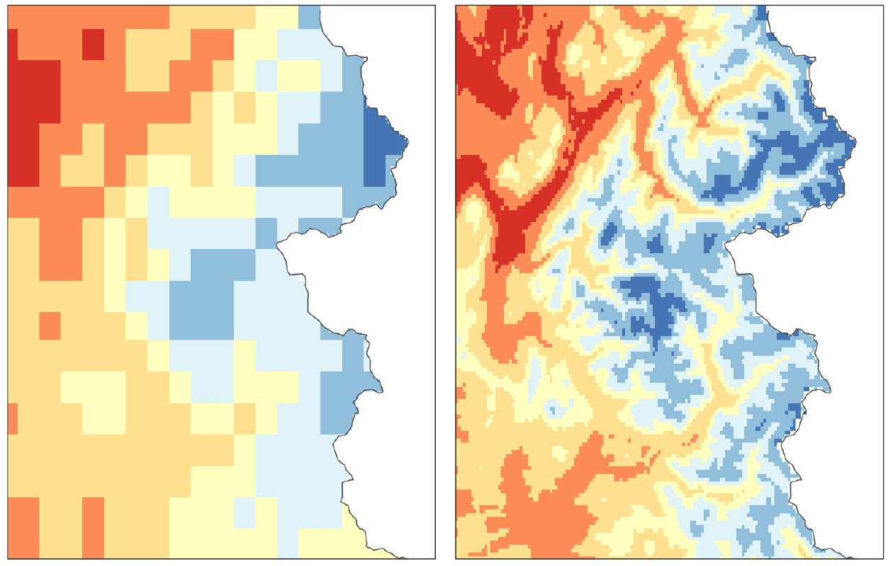
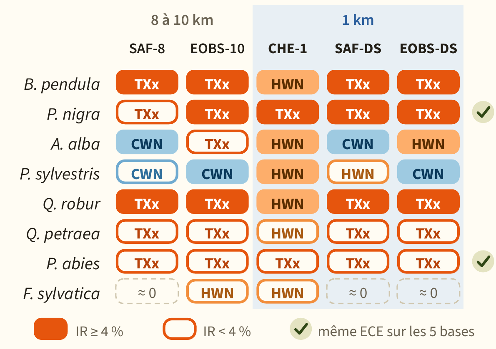
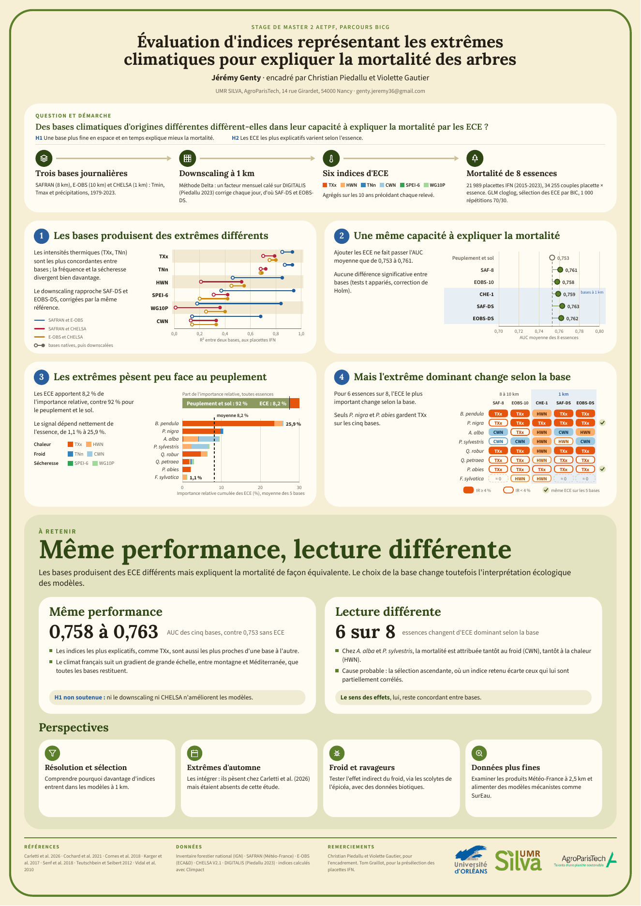

Master's internship · UMR Silva, AgroParisTech, Nancy · 2026
Climate extremes and tree mortality
Key findings
- Same performance, different reading. The 5 datasets explain mortality equally well (AUC 0.758 to 0.763). But for 6 of the 8 species, the most important climate extreme changes with the dataset used.
- Datasets agree on intensity, not on frequency. For extreme temperatures the datasets are highly correlated (R² 0.85 to 0.87); for heatwaves, cold spells and drought, much less so (R² 0.14 to 0.6).
- Climate remains secondary. Extremes account for 8.2% of the explained mortality on average (from 1.1% for beech to 26% for birch); stand structure dominates. A 1 km resolution does not improve the models at the scale of France.
- Extremes or mean climate? Extreme-event indices do not predict mortality better than mean climate: the AUCs of both approaches differ by at most 0.003, and mean climate even weighs slightly more (9.0% vs 8.2%).
Method, figures and documents
Climate datasets do not produce the same extremes. Does that choice change what we conclude about forest mortality? I computed 6 extreme-event indices (heat, cold, drought) with 5 climate datasets, two of which I downscaled from 8-10 km to 1 km, then modelled the mortality of 8 tree species on 21,989 National Forest Inventory plots (GLMs in R, BIC selection, 1,000 validation splits).
How this fits the literature
To my knowledge, few studies focus specifically on the role of climate extremes in forest mortality; the closest is Carletti et al. (2026), on silver fir and Norway spruce. Despite different methods, some trends agree: in spruce the most explanatory variables are also heat-related, and in fir both studies find a role for cold spells (5.5% of importance in my study vs 2.5%). Extremes weigh much more in theirs, however (up to 22% for fir and 29% for spruce): that study focused on pure stands and included autumn extremes, which mine did not.

SAFRAN 8 km1 km (downscaled)▲N

Next steps
- Resolution and selection: understand why more indices enter the models at 1 km.
- Autumn extremes: include them, since they matter in Carletti et al. (2026).
- Cold and pests: test the indirect effect of cold through spruce bark beetles, using biotic data.
- Finer data: examine Météo-France 2.5 km products and feed process-based models such as SurEau.
Quality assurance. I published the full processing pipeline openly, with a 17-item register (ERRATA) documenting every error found afterwards and its effect on the results: none invalidates the conclusions, the most exposed being the low weight of drought. Outliers were kept and explained rather than discarded.
- R
- terra
- Climpact
- GLM
- NFI data
- Downscaling
Internship report (PDF, in French) · Poster (PDF, A0, in French) · Defence slides (PDF, 41 slides, in French) · Code repository · ERRATA

View the poster